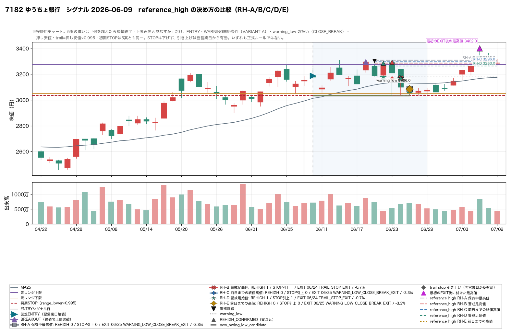
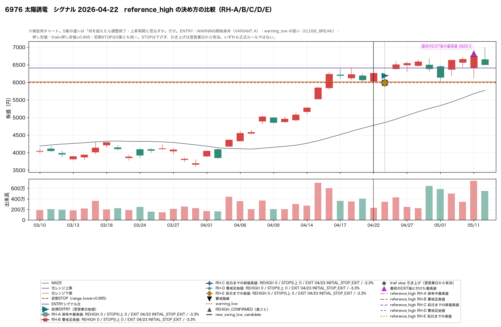
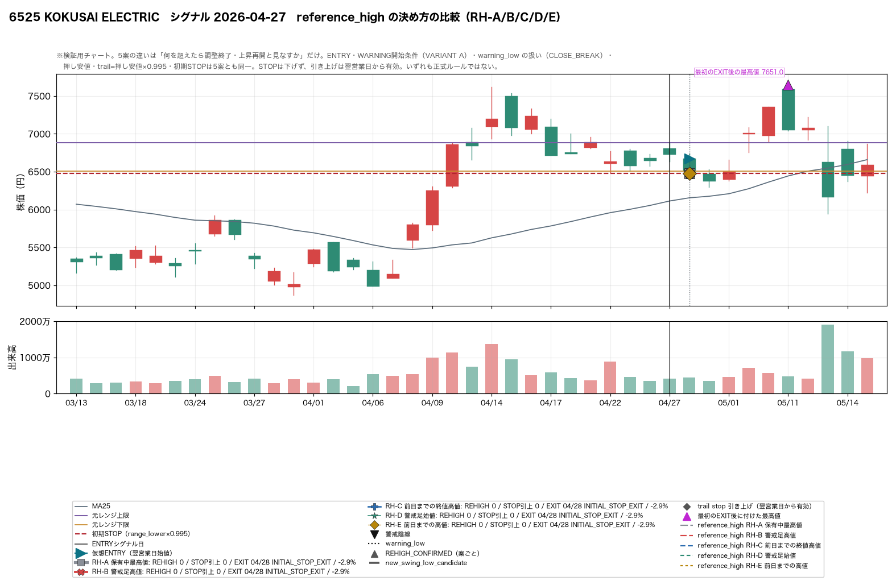
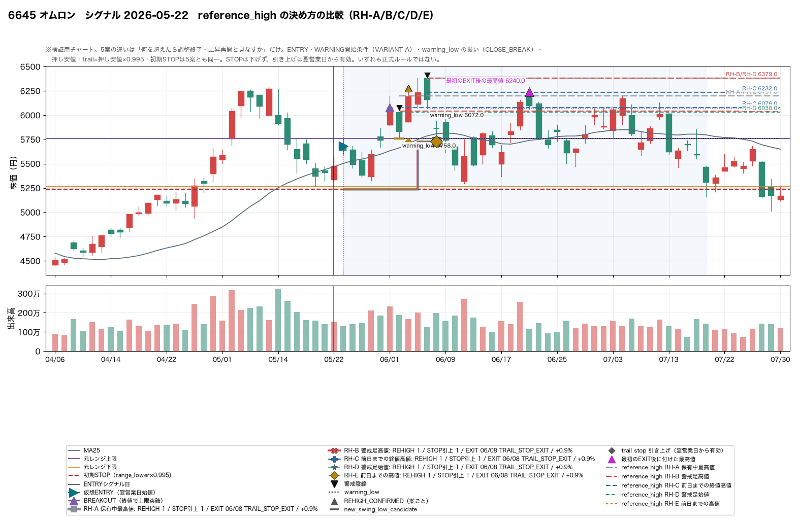
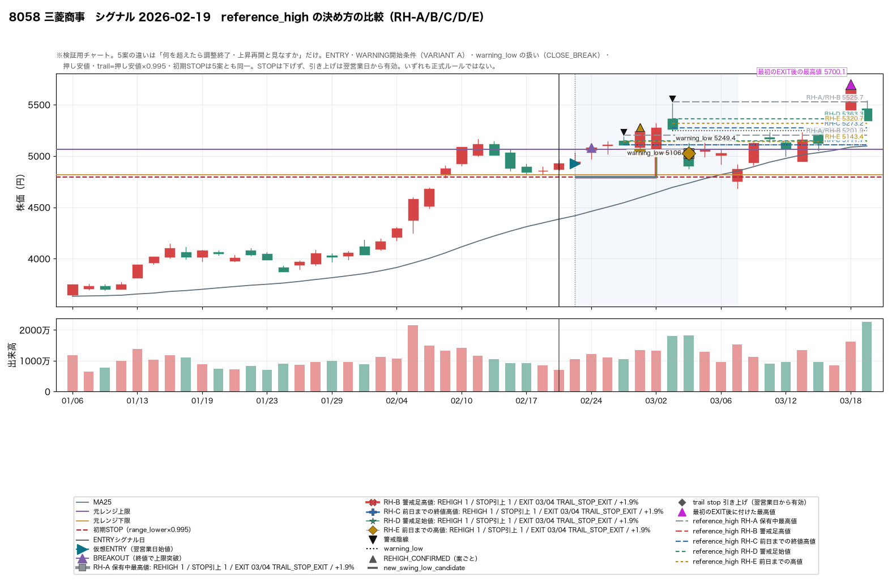
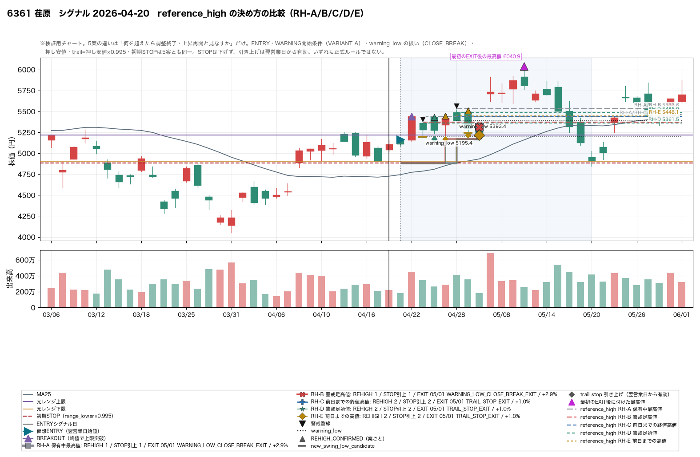
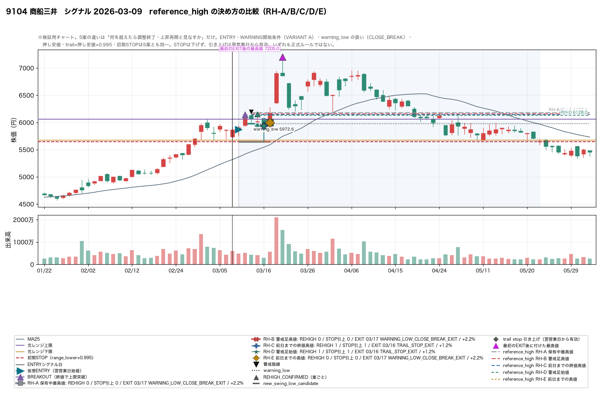
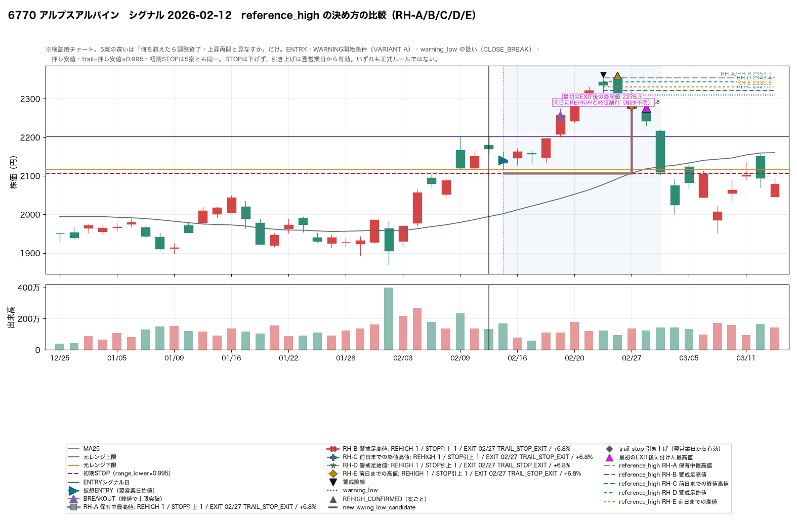
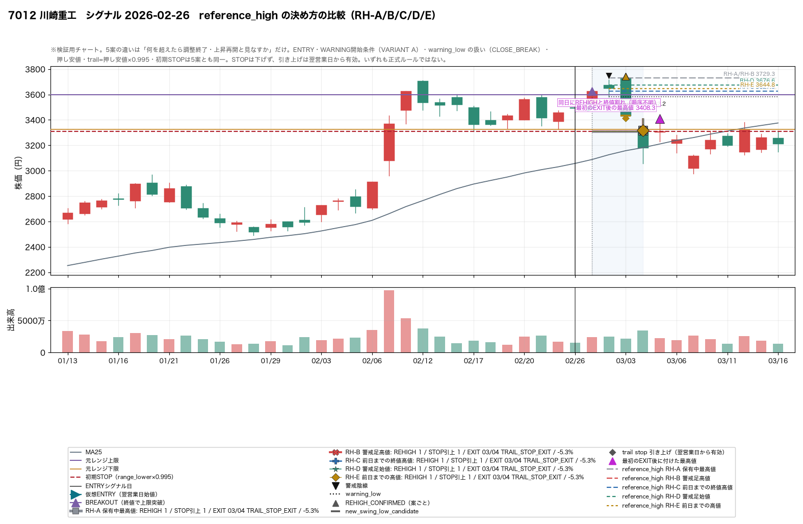
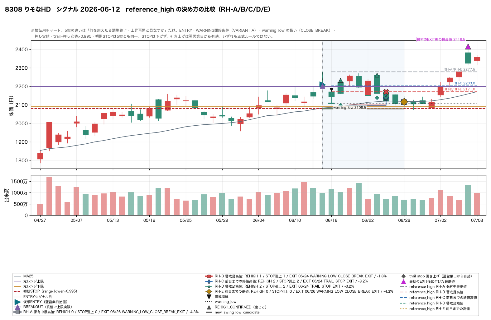

near.max_position_in_range = 0.65 で発生した ENTRY_CANDIDATE
32 件（仮想ENTRY成立 32 件）× 5 案 ／
WARNING 開始条件は VARIANT A、warning_low 割れ後は CLOSE_BREAK に固定 ／
生成日 2026-08-11
reference_high の決め方だけ。
ENTRY ロジック、near.max_position_in_range = 0.65、
初期STOP range_lower × 0.995、WARNING 開始条件、
warning_low の定義、押し安値候補の計算方法、
trail = 押し安値 × 0.995、STOP を下方向へ動かさないこと は
5 案とも完全に同一で、今回いっさい触っていない。
固定利確も導入しておらず、新しい%閾値も探索していない。warning_low 割れ後は
CLOSE_BREAK（仮想EXITは翌営業日始値）に固定した。
どちらも「今回の変数を reference_high だけに絞るための研究上の基準」であって、
正式採用ではない。前 2 回の検証の結論は保留のままである。warning_low 割れ」と
「high > reference_high」の両方が成立する日がある。
日足では先後を決められないので AMBIGUOUS_REHIGH_EXIT_ORDER として分離し、
REHIGH 優先 / EXIT 優先の両方を走らせて差分を出している。
どちらが正しい順序かは決めていない。| rh_rule | 略称 | reference_high | 意味 |
|---|---|---|---|
HOLDING_HIGH | RH-A 保有中最高値 | max(high) ENTRY〜警戒足当日 | RH-A HOLDING_HIGH（警戒足発生時点までの保有中最高値。現行） |
WARNING_HIGH | RH-B 警戒足高値 | warning_high | RH-B WARNING_HIGH（警戒陰線自身の高値） |
PRE_WARNING_CLOSE_HIGH | RH-C 前日までの終値高値 | max(close) ENTRY〜警戒足前日 | RH-C PRE_WARNING_CLOSE_HIGH（警戒足前日までの終値ベース最高値） |
WARNING_OPEN | RH-D 警戒足始値 | warning_open | RH-D WARNING_OPEN（警戒陰線の始値） |
PRE_WARNING_HIGH | RH-E 前日までの高値 | max(high) ENTRY〜警戒足前日 | RH-E PRE_WARNING_HIGH（警戒足前日までの高値ベース最高値。参考） |
open > close、また high ≧ open なので
RH-A ≧ RH-B ≧ RH-D、さらに RH-A ≧ RH-C、
RH-A ≧ RH-E が常に成り立つ。
つまり RH-A が必ず最も高いハードルで、他の 4 案はそれを下げる方向にしか動かない。
RH-C と RH-B / RH-D の前後は決まらない。
| 節 | 指標 | RH-A 保有中最高値 | RH-B 警戒足高値 | RH-C 前日までの終値高値 | RH-D 警戒足始値 | RH-E 前日までの高値 | 注記 |
|---|---|---|---|---|---|---|---|
| §11 | WARNING 発生件数 | 26 件 | 27 件 | 27 件 | 29 件 | 26 件 | |
| §11 | REHIGH_CONFIRMED 件数 | 7/26 (27%) | 10/27 (37%) | 11/27 (41%) | 14/29 (48%) | 8/26 (31%) | 分母は同じ案での WARNING 件数。案によって WARNING の出方自体が変わる |
| §11 | REHIGH した イベント数 | 7/32 (22%) | 9/32 (28%) | 9/32 (28%) | 11/32 (34%) | 7/32 (22%) | |
| §11 | WARNING → REHIGH までの営業日数 中央値 | 1.0 日 | 1.0 日 | 1.0 日 | 1.0 日 | 1.0 日 | |
| §11 | 決着の内訳: warning_low 終値割れが先 | 19/26 (73%) | 17/27 (63%) | 16/27 (59%) | 15/29 (52%) | 18/26 (69%) | |
| §11 | 決着の内訳: REHIGH が先 | 4/26 (15%) | 7/27 (26%) | 6/27 (22%) | 9/29 (31%) | 4/26 (15%) | |
| §11 | 決着の内訳: 同日に両方成立（順序不明） | 3/26 (12%) | 3/27 (11%) | 5/27 (19%) | 5/29 (17%) | 4/26 (15%) | 同日成立は日足では先後を決められないので、どちらにも寄せずに分離した（§7） |
| §11 | 決着の内訳: どちらにも到達しなかった | 0/26 (0%) | 0/27 (0%) | 0/27 (0%) | 0/29 (0%) | 0/26 (0%) |
| 節 | 指標 | RH-A 保有中最高値 | RH-B 警戒足高値 | RH-C 前日までの終値高値 | RH-D 警戒足始値 | RH-E 前日までの高値 | 注記 |
|---|---|---|---|---|---|---|---|
| §12 | trail stop を1回以上引き上げたイベント数 | 6/32 (19%) | 9/32 (28%) | 8/32 (25%) | 11/32 (34%) | 6/32 (19%) | |
| §12 | trail stop を2回以上引き上げたイベント数 | 0/32 (0%) | 0/32 (0%) | 2/32 (6%) | 2/32 (6%) | 1/32 (3%) | |
| §12 | trail stop 更新の総回数 | 6 回 | 9 回 | 10 回 | 13 回 | 7 回 | |
| §12 | 初回 STOP 引き上げまでの営業日数 中央値 | 5.0 日 | 6.0 日 | 4.0 日 | 4.0 日 | 5.0 日 | ENTRY 日を 0 とした営業日数。引き上げは翌営業日から有効 |
| §12 | initial_stop → 初回 trail stop の引き上げ幅 中央値 | +7.28% | +5.88% | +5.55% | +5.22% | +7.28% | |
| §12 | STOP を ENTRY 価格より上へ持ち上げたイベント数 | 5/32 (16%) | 5/32 (16%) | 6/32 (19%) | 6/32 (19%) | 5/32 (16%) | 手数料等を考慮していないので、これがそのまま「損益分岐点より上」の件数（§12 の参考条件 trail_stop > entry_price） |
max_gain_pct は EXIT 日までしか見ないので、
案が違うと分母まで変わってしまい「利益をどれだけ残せたか」を比較できない。
ここでは ENTRY から追跡終端までにその銘柄が見せた最大含み益を使う。| 節 | 指標 | RH-A 保有中最高値 | RH-B 警戒足高値 | RH-C 前日までの終値高値 | RH-D 警戒足始値 | RH-E 前日までの高値 | 注記 |
|---|---|---|---|---|---|---|---|
| §13 | 仮想EXITリターン 中央値 | -2.69% | -2.42% | -2.69% | -2.54% | -2.69% | |
| §13 | 案ごとの最大含み益 中央値 | +4.29% | +4.29% | +4.29% | +4.29% | +4.29% | その案が実際に保有していた期間だけで測った値。案によって窓が違う |
| §13 | 追跡窓の最大含み益 中央値（5案共通の分母） | +10.10% | +10.10% | +10.10% | +10.10% | +10.10% | ENTRY から追跡終端までにその銘柄が見せた最大含み益。案に依存しない |
| §13 | 吐き出し幅 中央値（共通分母 − 仮想EXITリターン） | 12.65% | 12.14% | 12.47% | 12.47% | 12.65% | 小さいほど取り切れている |
| §13 | 最大含み益 +5% 以上に到達したイベント数 | 23 件 | 23 件 | 23 件 | 23 件 | 23 件 | 共通分母で数えているので 5 案とも同じ件数になる |
| §13 | うち trail stop を引き上げられた件数（+5%） | 6/23 (26%) | 8/23 (35%) | 8/23 (35%) | 9/23 (39%) | 6/23 (26%) | |
| §13 | EXIT 時に残せた利益 中央値（+5%） | -1.97% | -0.97% | -1.97% | -0.97% | -1.97% | |
| §13 | 最大利益のうち残せた割合 中央値（+5%） | -3.53% | -3.53% | -3.53% | -3.53% | -3.53% | 共通分母に対する割合。100% なら天井で降りられたということ |
| §13 | 最大含み益 +10% 以上に到達したイベント数 | 16 件 | 16 件 | 16 件 | 16 件 | 16 件 | 共通分母で数えているので 5 案とも同じ件数になる |
| §13 | うち trail stop を引き上げられた件数（+10%） | 5/16 (31%) | 5/16 (31%) | 6/16 (38%) | 6/16 (38%) | 5/16 (31%) | |
| §13 | EXIT 時に残せた利益 中央値（+10%） | -0.03% | -0.03% | -0.03% | -0.03% | -0.03% | |
| §13 | 最大利益のうち残せた割合 中央値（+10%） | 1.40% | 1.40% | 0.98% | 0.98% | 0.98% | 共通分母に対する割合。100% なら天井で降りられたということ |
| 節 | 指標 | RH-A 保有中最高値 | RH-B 警戒足高値 | RH-C 前日までの終値高値 | RH-D 警戒足始値 | RH-E 前日までの高値 | 注記 |
|---|---|---|---|---|---|---|---|
| §14 | trail STOP で降りたイベント数 | 5/32 (16%) | 7/32 (22%) | 8/32 (25%) | 11/32 (34%) | 6/32 (19%) | |
| §14 | うち EXIT 後さらに +3% 以上上昇 | 5/5 (100%) | 6/7 (86%) | 8/8 (100%) | 10/11 (91%) | 6/6 (100%) | 早く上げすぎた trail で、正常な調整で降りた疑いのあるケース |
| §14 | うち EXIT 後さらに +5% 以上上昇 | 2/5 (40%) | 3/7 (43%) | 5/8 (62%) | 7/11 (64%) | 3/6 (50%) | 早く上げすぎた trail で、正常な調整で降りた疑いのあるケース |
| §14 | うち EXIT 後さらに +10% 以上上昇 | 2/5 (40%) | 2/7 (29%) | 5/8 (62%) | 6/11 (55%) | 3/6 (50%) | 早く上げすぎた trail で、正常な調整で降りた疑いのあるケース |
| §14 | うち EXIT 後に保有中最高値を更新 | 4/5 (80%) | 5/7 (71%) | 7/8 (88%) | 8/11 (73%) | 5/6 (83%) | 降りた後で上昇が続いていた（調整が終わっていなかった）ことの直接的な証拠 |
| §14 | EXIT 後の上昇率 中央値 | +4.82% | +4.82% | +16.40% | +13.14% | +12.24% |
| 案 | 銘柄 | シグナル | trail EXIT | EXITリターン | EXIT後の上昇率 | 保有中最高値を更新 | EXIT後の最大含み益 |
|---|---|---|---|---|---|---|---|
| RH-C 前日までの終値高値 | 6361 荏原 | D+2026-04-20 | D+2026-05-01 | +1.01% | +31.35% | ○ | +32.68% |
| RH-D 警戒足始値 | 6361 荏原 | D+2026-04-20 | D+2026-05-01 | +1.01% | +31.35% | ○ | +32.68% |
| RH-E 前日までの高値 | 6361 荏原 | D+2026-04-20 | D+2026-05-01 | +1.01% | +31.35% | ○ | +32.68% |
| RH-C 前日までの終値高値 | 9104 商船三井 | D+2026-03-09 | D+2026-03-16 | +1.20% | +21.24% | ○ | +22.70% |
| RH-D 警戒足始値 | 9104 商船三井 | D+2026-03-09 | D+2026-03-16 | +1.20% | +21.24% | ○ | +22.70% |
| RH-A 保有中最高値 | 6645 オムロン | D+2026-05-22 | D+2026-06-08 | +0.87% | +20.94% | ○ | +21.99% |
| RH-B 警戒足高値 | 6645 オムロン | D+2026-05-22 | D+2026-06-08 | +0.87% | +20.94% | ○ | +21.99% |
| RH-C 前日までの終値高値 | 6645 オムロン | D+2026-05-22 | D+2026-06-08 | +0.87% | +20.94% | ○ | +21.99% |
| RH-D 警戒足始値 | 6645 オムロン | D+2026-05-22 | D+2026-06-08 | +0.87% | +20.94% | ○ | +21.99% |
| RH-E 前日までの高値 | 6645 オムロン | D+2026-05-22 | D+2026-06-08 | +0.87% | +20.94% | ○ | +21.99% |
| RH-A 保有中最高値 | 8058 三菱商事 | D+2026-02-19 | D+2026-03-04 | +1.93% | +19.65% | ○ | +21.96% |
| RH-B 警戒足高値 | 8058 三菱商事 | D+2026-02-19 | D+2026-03-04 | +1.93% | +19.65% | ○ | +21.96% |
| RH-C 前日までの終値高値 | 8058 三菱商事 | D+2026-02-19 | D+2026-03-04 | +1.93% | +19.65% | ○ | +21.96% |
| RH-D 警戒足始値 | 8058 三菱商事 | D+2026-02-19 | D+2026-03-04 | +1.93% | +19.65% | ○ | +21.96% |
| RH-E 前日までの高値 | 8058 三菱商事 | D+2026-02-19 | D+2026-03-04 | +1.93% | +19.65% | ○ | +21.96% |
| RH-C 前日までの終値高値 | 8308 りそなHD | D+2026-06-12 | D+2026-06-24 | -3.22% | +13.15% | ○ | +9.50% |
| RH-D 警戒足始値 | 8308 りそなHD | D+2026-06-12 | D+2026-06-24 | -3.22% | +13.15% | ○ | +9.50% |
| RH-D 警戒足始値 | 6594 ニデック | D+2026-05-29 | D+2026-06-08 | -7.86% | +13.14% | － | +4.25% |
| RH-B 警戒足高値 | 7182 ゆうちょ銀行 | D+2026-06-09 | D+2026-06-24 | -0.66% | +9.41% | ○ | +8.69% |
| RH-D 警戒足始値 | 7182 ゆうちょ銀行 | D+2026-06-09 | D+2026-06-24 | -0.66% | +9.41% | ○ | +8.69% |
| RH-A 保有中最高値 | 7012 川崎重工 | D+2026-02-26 | D+2026-03-04 | -5.33% | +4.82% | － | -0.76% |
| RH-B 警戒足高値 | 7012 川崎重工 | D+2026-02-26 | D+2026-03-04 | -5.33% | +4.82% | － | -0.76% |
| RH-C 前日までの終値高値 | 7012 川崎重工 | D+2026-02-26 | D+2026-03-04 | -5.33% | +4.82% | － | -0.76% |
| RH-D 警戒足始値 | 7012 川崎重工 | D+2026-02-26 | D+2026-03-04 | -5.33% | +4.82% | － | -0.76% |
| RH-E 前日までの高値 | 7012 川崎重工 | D+2026-02-26 | D+2026-03-04 | -5.33% | +4.82% | － | -0.76% |
| RH-A 保有中最高値 | 6770 アルプスアルパイン | D+2026-02-12 | D+2026-02-27 | +6.84% | +4.50% | ○ | +11.64% |
| RH-A 保有中最高値 | 6770 アルプスアルパイン | D+2026-02-16 | D+2026-02-27 | +5.94% | +4.50% | ○ | +10.70% |
| RH-B 警戒足高値 | 6770 アルプスアルパイン | D+2026-02-12 | D+2026-02-27 | +6.84% | +4.50% | ○ | +11.64% |
| RH-B 警戒足高値 | 6770 アルプスアルパイン | D+2026-02-16 | D+2026-02-27 | +5.94% | +4.50% | ○ | +10.70% |
| RH-C 前日までの終値高値 | 6770 アルプスアルパイン | D+2026-02-12 | D+2026-02-27 | +6.84% | +4.50% | ○ | +11.64% |
| RH-C 前日までの終値高値 | 6770 アルプスアルパイン | D+2026-02-16 | D+2026-02-27 | +5.94% | +4.50% | ○ | +10.70% |
| RH-D 警戒足始値 | 6770 アルプスアルパイン | D+2026-02-12 | D+2026-02-27 | +6.84% | +4.50% | ○ | +11.64% |
| RH-D 警戒足始値 | 6770 アルプスアルパイン | D+2026-02-16 | D+2026-02-27 | +5.94% | +4.50% | ○ | +10.70% |
| RH-E 前日までの高値 | 6770 アルプスアルパイン | D+2026-02-12 | D+2026-02-27 | +6.84% | +4.50% | ○ | +11.64% |
| RH-E 前日までの高値 | 6770 アルプスアルパイン | D+2026-02-16 | D+2026-02-27 | +5.94% | +4.50% | ○ | +10.70% |
| RH-B 警戒足高値 | 9104 商船三井 | D+2026-03-25 | D+2026-04-08 | -0.56% | +1.24% | － | +0.68% |
| RH-D 警戒足始値 | 9104 商船三井 | D+2026-03-25 | D+2026-04-08 | -0.56% | +1.24% | － | +0.68% |
| 項目 | 値 | 該当件数 | 注記 |
|---|---|---|---|
| 母集団（RH-A の警戒足） | 26 件 | 5 案の水準はすべて同じ警戒足の当日までの足から決まる | |
| RH-A と RH-B が同じ（警戒陰線自身が保有中最高値を作った） | 10/26 (38%) | この場合、RH-B に変えても「警戒足の天井をもう一度抜く」条件は緩まない | |
| RH-B 警戒足高値 が RH-A より低い幅 中央値 | -0.46% | 16/26 (62%) | RH-A を 0 とした差。負なら RH-A より低いハードル |
| RH-C 前日までの終値高値 が RH-A より低い幅 中央値 | -1.36% | 23/26 (88%) | RH-A を 0 とした差。負なら RH-A より低いハードル |
| RH-D 警戒足始値 が RH-A より低い幅 中央値 | -1.18% | 26/26 (100%) | RH-A を 0 とした差。負なら RH-A より低いハードル |
| RH-E 前日までの高値 が RH-A より低い幅 中央値 | +0.00% | 10/26 (38%) | RH-A を 0 とした差。負なら RH-A より低いハードル |
| 5 案の中で最も低かった: RH-A 保有中最高値 | 0/26 (0%) | ||
| 5 案の中で最も低かった: RH-B 警戒足高値 | 1/26 (4%) | ||
| 5 案の中で最も低かった: RH-C 前日までの終値高値 | 11/26 (42%) | ||
| 5 案の中で最も低かった: RH-D 警戒足始値 | 14/26 (54%) | ||
| 5 案の中で最も低かった: RH-E 前日までの高値 | 0/26 (0%) | ||
| RH-C が RH-B より低い | 14/26 (54%) | 終値ベースの高値が警戒足の高値より下だったケース | |
| RH-C が RH-D より低い | 11/26 (42%) | 終値ベースの高値が警戒足の始値より下だったケース | |
| 5 案の水準差（最高 − 最低）の ENTRY 比 中央値 | 2.02% | 案の違いが価格として何%ぶんのハードル差になっているか |
| 案 | 順序不明の日 | 該当イベント | 結果が変わったイベント | REHIGH優先の仮想EXIT 中央値 | EXIT優先の仮想EXIT 中央値 |
|---|---|---|---|---|---|
| RH-A 保有中最高値 | 3 | 3 | 3 | -2.69% | -2.69% |
| RH-B 警戒足高値 | 3 | 3 | 3 | -2.42% | -2.42% |
| RH-C 前日までの終値高値 | 5 | 5 | 5 | -2.69% | -2.59% |
| RH-D 警戒足始値 | 5 | 5 | 5 | -2.54% | -2.42% |
| RH-E 前日までの高値 | 4 | 4 | 4 | -2.69% | -2.69% |
high を付けたか」の情報がない。
引け後に日足を見る運用では、終値割れも高値更新も同時に見えるので、
時間順ではなく「どちらの合図を優先するか」というルール設計の問題になる。
前回までの実装は REHIGH 優先だったが、それは実装の都合であって根拠ではないため、
今回は外部パラメータに切り出して両方を走らせた結果を並べている。
| 案 | 今回確定 | fractalも同じ安値 | 今回のみ | fractalのみ | 今回が先 | 同日 | fractalが先 | 今回のリード日数 中央値 |
|---|---|---|---|---|---|---|---|---|
| RH-A 保有中最高値 | 7 | 1 | 6 | 6 | 0 | 0 | 1 | -1.0 日 |
| RH-B 警戒足高値 | 10 | 2 | 8 | 5 | 2 | 0 | 0 | 1.0 日 |
| RH-C 前日までの終値高値 | 11 | 2 | 9 | 4 | 1 | 0 | 1 | 0.0 日 |
| RH-D 警戒足始値 | 14 | 2 | 12 | 4 | 2 | 0 | 0 | 1.0 日 |
| RH-E 前日までの高値 | 8 | 1 | 7 | 6 | 0 | 0 | 1 | -1.0 日 |
fractalのみ は「今回は REHIGH に到達せず押し安値を確定できなかったが、
その WARNING 期間の中に fractal なら押し安値と認める安値があった」件数。
fractal は右側 pivot が揃うまで確定しないので、確定日の比較も
_fractal_confirm_index で 1 日ずつスライスして求めている。
この比較は状態機械の後段パスであり、追跡結果には一切影響しない。
| 節 | 指標 | RH-A 保有中最高値 | RH-B 警戒足高値 | RH-C 前日までの終値高値 | RH-D 警戒足始値 | RH-E 前日までの高値 | 注記 |
|---|---|---|---|---|---|---|---|
| §21-9 | STUCK_IN_WARNING | 5/32 (16%) | 6/32 (19%) | 6/32 (19%) | 5/32 (16%) | 5/32 (16%) | warning_low を日中に割ったのに WARNING に留まった日があったイベント |
| §21-9 | INITIAL_STOP_EXIT_AFTER_BREAKOUT | 4/32 (12%) | 4/32 (12%) | 4/32 (12%) | 3/32 (9%) | 4/32 (12%) | 上限突破後、trail を一度も上げられないまま初期STOPまで戻った |
| §21-9 | EXIT 種別: 利確候補（終値割れ） | 13/32 (41%) | 11/32 (34%) | 10/32 (31%) | 8/32 (25%) | 12/32 (38%) | |
| §21-9 | EXIT 種別: trail STOP | 5/32 (16%) | 7/32 (22%) | 8/32 (25%) | 11/32 (34%) | 6/32 (19%) | |
| §21-9 | EXIT 種別: 初期STOP（突破前を含む） | 14/32 (44%) | 14/32 (44%) | 14/32 (44%) | 13/32 (41%) | 14/32 (44%) | |
| §7 | 同日に REHIGH と利確候補（順序不明） | 3 日 | 3 日 | 5 日 | 5 日 | 4 日 | どちらが先かは日足では決められないため、順序を決めずに分離した |
「追跡窓の最大含み益」は 5 案共通の分母。 セル内は 仮想EXITリターン / EXIT 種別 / STOP 引き上げ回数。
| 銘柄 | シグナル | 追跡窓の最大含み益 | RH-A 保有中最高値 | RH-B 警戒足高値 | RH-C 前日までの終値高値 | RH-D 警戒足始値 | RH-E 前日までの高値 |
|---|---|---|---|---|---|---|---|
| 6976 太陽誘電 | D+2026-04-22 | +288.77% | -3.28% INITIAL_STOP_EXIT / STOP↑0 | -3.28% INITIAL_STOP_EXIT / STOP↑0 | -3.28% INITIAL_STOP_EXIT / STOP↑0 | -3.28% INITIAL_STOP_EXIT / STOP↑0 | -3.28% INITIAL_STOP_EXIT / STOP↑0 |
| 6525 KOKUSAI ELECTRIC | D+2026-04-27 | +83.13% | -2.93% INITIAL_STOP_EXIT / STOP↑0 | -2.93% INITIAL_STOP_EXIT / STOP↑0 | -2.93% INITIAL_STOP_EXIT / STOP↑0 | -2.93% INITIAL_STOP_EXIT / STOP↑0 | -2.93% INITIAL_STOP_EXIT / STOP↑0 |
| 464A QPSホールディングス | D+2026-04-17 | +67.66% | -3.93% WARNING_LOW_CLOSE_BREAK_EXIT / STOP↑0 | -3.93% WARNING_LOW_CLOSE_BREAK_EXIT / STOP↑0 | -3.93% WARNING_LOW_CLOSE_BREAK_EXIT / STOP↑0 | -3.93% WARNING_LOW_CLOSE_BREAK_EXIT / STOP↑0 | -3.93% WARNING_LOW_CLOSE_BREAK_EXIT / STOP↑0 |
| 200A NEXT FUNDS 日経半導体株指数連動型上場投信 | D+2026-02-19 | +40.34% | -4.55% WARNING_LOW_CLOSE_BREAK_EXIT / STOP↑0 | -4.55% WARNING_LOW_CLOSE_BREAK_EXIT / STOP↑0 | -4.55% WARNING_LOW_CLOSE_BREAK_EXIT / STOP↑0 | -4.55% WARNING_LOW_CLOSE_BREAK_EXIT / STOP↑0 | -4.55% WARNING_LOW_CLOSE_BREAK_EXIT / STOP↑0 |
| 6361 荏原 | D+2026-04-20 | +32.68% | +2.89% WARNING_LOW_CLOSE_BREAK_EXIT / STOP↑1 | +2.89% WARNING_LOW_CLOSE_BREAK_EXIT / STOP↑1 | +1.01% TRAIL_STOP_EXIT / STOP↑2 | +1.01% TRAIL_STOP_EXIT / STOP↑2 | +1.01% TRAIL_STOP_EXIT / STOP↑2 |
| 9107 川崎汽船 | D+2026-02-12 | +27.92% | -0.97% INITIAL_STOP_EXIT / STOP↑0 | -0.97% INITIAL_STOP_EXIT / STOP↑0 | -0.97% INITIAL_STOP_EXIT / STOP↑0 | -0.97% INITIAL_STOP_EXIT / STOP↑0 | -0.97% INITIAL_STOP_EXIT / STOP↑0 |
| 2644 GX 半導体関連-日本株式 ETF | D+2026-02-18 | +24.81% | +1.64% WARNING_LOW_CLOSE_BREAK_EXIT / STOP↑0 | +1.64% WARNING_LOW_CLOSE_BREAK_EXIT / STOP↑0 | +1.64% WARNING_LOW_CLOSE_BREAK_EXIT / STOP↑0 | +1.64% WARNING_LOW_CLOSE_BREAK_EXIT / STOP↑0 | +1.64% WARNING_LOW_CLOSE_BREAK_EXIT / STOP↑0 |
| 6594 ニデック | D+2026-02-19 | +24.80% | -2.37% INITIAL_STOP_EXIT_AFTER_BREAKOUT / STOP↑0 | -2.37% INITIAL_STOP_EXIT_AFTER_BREAKOUT / STOP↑0 | -2.37% INITIAL_STOP_EXIT_AFTER_BREAKOUT / STOP↑0 | -2.37% INITIAL_STOP_EXIT_AFTER_BREAKOUT / STOP↑0 | -2.37% INITIAL_STOP_EXIT_AFTER_BREAKOUT / STOP↑0 |
| 9104 商船三井 | D+2026-03-09 | +22.70% | +2.18% WARNING_LOW_CLOSE_BREAK_EXIT / STOP↑0 | +2.18% WARNING_LOW_CLOSE_BREAK_EXIT / STOP↑0 | +1.20% TRAIL_STOP_EXIT / STOP↑1 | +1.20% TRAIL_STOP_EXIT / STOP↑1 | +2.18% WARNING_LOW_CLOSE_BREAK_EXIT / STOP↑0 |
| 6645 オムロン | D+2026-05-22 | +21.99% | +0.87% TRAIL_STOP_EXIT / STOP↑1 | +0.87% TRAIL_STOP_EXIT / STOP↑1 | +0.87% TRAIL_STOP_EXIT / STOP↑1 | +0.87% TRAIL_STOP_EXIT / STOP↑1 | +0.87% TRAIL_STOP_EXIT / STOP↑1 |
| 8058 三菱商事 | D+2026-02-19 | +21.96% | +1.93% TRAIL_STOP_EXIT / STOP↑1 | +1.93% TRAIL_STOP_EXIT / STOP↑1 | +1.93% TRAIL_STOP_EXIT / STOP↑1 | +1.93% TRAIL_STOP_EXIT / STOP↑1 | +1.93% TRAIL_STOP_EXIT / STOP↑1 |
| 6383 ダイフク | D+2026-04-20 | +21.74% | -2.77% INITIAL_STOP_EXIT / STOP↑0 | -2.77% INITIAL_STOP_EXIT / STOP↑0 | -2.77% INITIAL_STOP_EXIT / STOP↑0 | -2.77% INITIAL_STOP_EXIT / STOP↑0 | -2.77% INITIAL_STOP_EXIT / STOP↑0 |
| 8306 三菱UFJ | D+2026-06-12 | +18.01% | +1.36% WARNING_LOW_CLOSE_BREAK_EXIT / STOP↑0 | +1.36% WARNING_LOW_CLOSE_BREAK_EXIT / STOP↑0 | +1.36% WARNING_LOW_CLOSE_BREAK_EXIT / STOP↑0 | +1.36% WARNING_LOW_CLOSE_BREAK_EXIT / STOP↑0 | +1.36% WARNING_LOW_CLOSE_BREAK_EXIT / STOP↑0 |
| 8015 豊田通商 | D+2026-02-18 | +12.15% | -0.93% WARNING_LOW_CLOSE_BREAK_EXIT / STOP↑0 | -0.93% WARNING_LOW_CLOSE_BREAK_EXIT / STOP↑0 | -0.93% WARNING_LOW_CLOSE_BREAK_EXIT / STOP↑0 | -0.93% WARNING_LOW_CLOSE_BREAK_EXIT / STOP↑0 | -0.93% WARNING_LOW_CLOSE_BREAK_EXIT / STOP↑0 |
| 6770 アルプスアルパイン | D+2026-02-12 | +11.64% | +6.84% TRAIL_STOP_EXIT / STOP↑1 | +6.84% TRAIL_STOP_EXIT / STOP↑1 | +6.84% TRAIL_STOP_EXIT / STOP↑1 | +6.84% TRAIL_STOP_EXIT / STOP↑1 | +6.84% TRAIL_STOP_EXIT / STOP↑1 |
| 6770 アルプスアルパイン | D+2026-02-16 | +10.70% | +5.94% TRAIL_STOP_EXIT / STOP↑1 | +5.94% TRAIL_STOP_EXIT / STOP↑1 | +5.94% TRAIL_STOP_EXIT / STOP↑1 | +5.94% TRAIL_STOP_EXIT / STOP↑1 | +5.94% TRAIL_STOP_EXIT / STOP↑1 |
| 8308 りそなHD | D+2026-06-12 | +9.50% | -4.28% WARNING_LOW_CLOSE_BREAK_EXIT / STOP↑0 | -1.81% WARNING_LOW_CLOSE_BREAK_EXIT / STOP↑1 | -3.22% TRAIL_STOP_EXIT / STOP↑2 | -3.22% TRAIL_STOP_EXIT / STOP↑2 | -4.28% WARNING_LOW_CLOSE_BREAK_EXIT / STOP↑0 |
| 8306 三菱UFJ | D+2026-02-18 | +9.11% | -2.47% WARNING_LOW_CLOSE_BREAK_EXIT / STOP↑0 | -2.47% WARNING_LOW_CLOSE_BREAK_EXIT / STOP↑0 | -2.47% WARNING_LOW_CLOSE_BREAK_EXIT / STOP↑0 | -2.47% WARNING_LOW_CLOSE_BREAK_EXIT / STOP↑0 | -2.47% WARNING_LOW_CLOSE_BREAK_EXIT / STOP↑0 |
| 7182 ゆうちょ銀行 | D+2026-06-09 | +8.69% | -3.26% WARNING_LOW_CLOSE_BREAK_EXIT / STOP↑0 | -0.66% TRAIL_STOP_EXIT / STOP↑1 | -3.26% WARNING_LOW_CLOSE_BREAK_EXIT / STOP↑0 | -0.66% TRAIL_STOP_EXIT / STOP↑1 | -3.26% WARNING_LOW_CLOSE_BREAK_EXIT / STOP↑0 |
| 1802 大林組 | D+2026-02-19 | +7.38% | +0.90% WARNING_LOW_CLOSE_BREAK_EXIT / STOP↑0 | +0.90% WARNING_LOW_CLOSE_BREAK_EXIT / STOP↑0 | +0.90% WARNING_LOW_CLOSE_BREAK_EXIT / STOP↑0 | +0.90% WARNING_LOW_CLOSE_BREAK_EXIT / STOP↑0 | +0.90% WARNING_LOW_CLOSE_BREAK_EXIT / STOP↑0 |
| 7012 川崎重工 | D+2026-02-26 | +6.75% | -5.33% TRAIL_STOP_EXIT / STOP↑1 | -5.33% TRAIL_STOP_EXIT / STOP↑1 | -5.33% TRAIL_STOP_EXIT / STOP↑1 | -5.33% TRAIL_STOP_EXIT / STOP↑1 | -5.33% TRAIL_STOP_EXIT / STOP↑1 |
| 7202 いすゞ | D+2026-07-15 | +6.26% | -1.97% INITIAL_STOP_EXIT / STOP↑0 | -1.97% INITIAL_STOP_EXIT / STOP↑0 | -1.97% INITIAL_STOP_EXIT / STOP↑0 | -1.97% INITIAL_STOP_EXIT / STOP↑0 | -1.97% INITIAL_STOP_EXIT / STOP↑0 |
| 8316 三井住友FG | D+2026-02-18 | +5.01% | -3.14% WARNING_LOW_CLOSE_BREAK_EXIT / STOP↑0 | -3.14% WARNING_LOW_CLOSE_BREAK_EXIT / STOP↑0 | -3.14% WARNING_LOW_CLOSE_BREAK_EXIT / STOP↑0 | -3.14% WARNING_LOW_CLOSE_BREAK_EXIT / STOP↑0 | -3.14% WARNING_LOW_CLOSE_BREAK_EXIT / STOP↑0 |
| 7203 トヨタ | D+2026-02-25 | +4.68% | -5.11% INITIAL_STOP_EXIT_AFTER_BREAKOUT / STOP↑0 | -5.11% INITIAL_STOP_EXIT_AFTER_BREAKOUT / STOP↑0 | -5.11% INITIAL_STOP_EXIT_AFTER_BREAKOUT / STOP↑0 | -5.11% INITIAL_STOP_EXIT_AFTER_BREAKOUT / STOP↑0 | -5.11% INITIAL_STOP_EXIT_AFTER_BREAKOUT / STOP↑0 |
| 6594 ニデック | D+2026-05-29 | +4.36% | -7.86% INITIAL_STOP_EXIT_AFTER_BREAKOUT / STOP↑0 | -7.86% INITIAL_STOP_EXIT_AFTER_BREAKOUT / STOP↑0 | -7.86% INITIAL_STOP_EXIT_AFTER_BREAKOUT / STOP↑0 | -7.86% TRAIL_STOP_EXIT / STOP↑1 | -7.86% INITIAL_STOP_EXIT_AFTER_BREAKOUT / STOP↑0 |
| 9104 商船三井 | D+2026-03-25 | +4.21% | -2.56% WARNING_LOW_CLOSE_BREAK_EXIT / STOP↑0 | -0.56% TRAIL_STOP_EXIT / STOP↑1 | -2.56% WARNING_LOW_CLOSE_BREAK_EXIT / STOP↑0 | -0.56% TRAIL_STOP_EXIT / STOP↑1 | -2.56% WARNING_LOW_CLOSE_BREAK_EXIT / STOP↑0 |
| 1802 大林組 | D+2026-07-22 | +3.34% | -3.24% INITIAL_STOP_EXIT / STOP↑0 | -3.24% INITIAL_STOP_EXIT / STOP↑0 | -3.24% INITIAL_STOP_EXIT / STOP↑0 | -3.24% INITIAL_STOP_EXIT / STOP↑0 | -3.24% INITIAL_STOP_EXIT / STOP↑0 |
| 2644 GX 半導体関連-日本株式 ETF | D+2026-07-09 | +3.15% | -10.75% INITIAL_STOP_EXIT_AFTER_BREAKOUT / STOP↑0 | -10.75% INITIAL_STOP_EXIT_AFTER_BREAKOUT / STOP↑0 | -10.75% INITIAL_STOP_EXIT_AFTER_BREAKOUT / STOP↑0 | -10.75% INITIAL_STOP_EXIT_AFTER_BREAKOUT / STOP↑0 | -10.75% INITIAL_STOP_EXIT_AFTER_BREAKOUT / STOP↑0 |
| 1812 鹿島建設 | D+2026-02-18 | +2.96% | -5.71% INITIAL_STOP_EXIT / STOP↑0 | -5.71% INITIAL_STOP_EXIT / STOP↑0 | -5.71% INITIAL_STOP_EXIT / STOP↑0 | -5.71% INITIAL_STOP_EXIT / STOP↑0 | -5.71% INITIAL_STOP_EXIT / STOP↑0 |
| 6752 パナソニックHD | D+2026-07-06 | +2.74% | -6.58% INITIAL_STOP_EXIT / STOP↑0 | -6.58% INITIAL_STOP_EXIT / STOP↑0 | -6.58% INITIAL_STOP_EXIT / STOP↑0 | -6.58% INITIAL_STOP_EXIT / STOP↑0 | -6.58% INITIAL_STOP_EXIT / STOP↑0 |
| 8308 りそなHD | D+2026-07-15 | +2.24% | -2.62% INITIAL_STOP_EXIT / STOP↑0 | -2.62% INITIAL_STOP_EXIT / STOP↑0 | -2.62% INITIAL_STOP_EXIT / STOP↑0 | -2.62% INITIAL_STOP_EXIT / STOP↑0 | -2.62% INITIAL_STOP_EXIT / STOP↑0 |
| 9502 中部電力 | D+2026-07-15 | +0.62% | -4.19% INITIAL_STOP_EXIT / STOP↑0 | -4.19% INITIAL_STOP_EXIT / STOP↑0 | -4.19% INITIAL_STOP_EXIT / STOP↑0 | -4.19% INITIAL_STOP_EXIT / STOP↑0 | -4.19% INITIAL_STOP_EXIT / STOP↑0 |
1 枚に 5 案を重ねている。
灰 = RH-A 保有中最高値 / 赤 = RH-B 警戒足高値 / 青 = RH-C 前日までの終値高値 /
緑 = RH-D 警戒足始値 / 黄土 = RH-E 前日までの高値。
5 本の水平線が各案の reference_high、
▲ が REHIGH、＿ が押し安値候補、◆ が STOP 引き上げ。







該当なし。






| 確認項目 | 実装上の担保 | テスト |
|---|---|---|
| RH-A は WARNING 発生時点までのデータだけを使用 | `holding_high` は日次ループの中で当日の足まで反映した running max。警戒足を開く `_open_warning` の呼び出し時点の値をそのまま固定し、以後書き換えない。 | test_RH_Aは警戒足当日までの高値だけを使う |
| RH-B は WARNING 当日の OHLC だけを使用 | `reference_high = bar.high`。その足以外は参照しない。 | test_RH_Bは警戒足自身の高値になる |
| RH-C は WARNING 前日までの close だけを使用 | 終値ベースの running max は日次処理の**最後**に更新する。同じ日に開いた警戒足の `reference_high` には当日の終値が入らない。 | test_RH_Cは警戒足当日の終値を含まない |
| RH-D は WARNING 当日の open だけを使用 | `reference_high = bar.open`。その足以外は参照しない。 | test_RH_Dは警戒足の始値になる |
| RH-E は WARNING 前日までの high だけを使用 | 当日の足を running max に入れる**前**の値を渡している。警戒足自身の上ヒゲは入らない。 | test_RH_Eは警戒足当日の高値を含まない |
| REHIGH はその日までのデータで判定 | `high > reference_high` をその営業日の足だけで評価する。翌日以降の足はループの中で一度も参照しない。 | test_REHIGHはその営業日の足だけで判定する |
| new_swing_low_candidate は REHIGH 確定時に初めて確定 | 押し安値は「警戒足の日から**今日まで**」の安値の最小値。`min_low_value` は毎日更新され、再突破した日の値でそのまま確定する。 | test_押し安値は再突破日までの安値だけで決まる |
| trail stop は REHIGH 翌営業日からのみ有効 | 確定した STOP は `pending_stop` に入り、翌営業日の寄りで `active_stop` に入る。確定した当日の安値には遡って適用されない。 | test_trail_stopは翌営業日から有効 |
| EXIT 後の未来値を判定には使用しない | EXIT 後にどこまで伸びたかは追跡が終わったあとに集計する。状態機械は EXIT 時点で閉じており、その後の足で挙動が変わることはない。 | test_EXIT後の値動きは状態遷移に影響しない_RH |
| prefix invariant を各 RH 案で満たす | 系列を先頭から k 本で打ち切って再実行しても、その時点までに確定していた REHIGH・押し安値・STOP 引き上げは変わらない。 | test_prefix不変性_5案いずれでも成立する |
k 本で
打ち切って再実行し、フル実行の結果と一致するかを RH-A〜RH-E すべてで確認している。
その時点までに成立していた REHIGH の日付、押し安値、STOP 引き上げの内容と
有効化日は打ち切っても変わらない。
reference_high に混ざる）→ 1 件失敗holding_high を渡す
（＝RH-A と同じになる）→ 4 件失敗bars[d+1].high で行う → 7 件失敗
（今回のテストだけでなく、既存の exit_state_machine /
warning_break のテストも落ちる）rh_rule の既定値は
HOLDING_HIGH（＝従来の定義）なので、
research/exit_state_machine/ の CSV 7 本、
research/warning_start_study/ の CSV 7 本、
research/warning_break_study/ の集計 CSV は
いずれも数値がバイト単位で以前と同一である。
唯一の差分は warning_break_study/events.csv の
timeline_summary 列に AMBIGUOUS_REHIGH_EXIT_ORDER の
表示が増えたことで、これは今回 §7 に従って
それまで黙って REHIGH 優先で処理していた同日成立を明示したためである。
判定も数値も変わっていない。
high > reference_high のままで、終値で判定しているわけではない。「終値で作った高値を、ザラ場で超えたか」を見ている点は残る。high ではなく close にすること。今回は §7 の指定どおり 5 案とも high > reference_high で固定したので、この軸は一度も動かしていない。日足・引け後判断との整合という Q5 の論点は、水準より判定側に効く可能性がある。(2) 押し安値の取り方そのもの。Q8 のとおり trail が立っても利益が残らないのは、押し安値が WARNING 期間の最安値（＝直近の投げ）に張り付くためで、これは reference_high ではなく押し安値側の問題である。いずれも今回の指示の範囲外なので、実装も検証もしていない。| 項目 | 今回の扱い |
|---|---|
| どの reference_high を正式ルールにするか | 決めていない。5 案の性質と副作用を整理しただけ。trail 成立件数や仮想利益で自動採用はしない（§22）。 |
| 同日に REHIGH と利確候補が両立した日の優先順位 | 決めていない。AMBIGUOUS_REHIGH_EXIT_ORDER として分離し、REHIGH 優先 / EXIT 優先の両方を走らせて差分を示すに留めた（§7）。 |
| 再突破の判定を high にするか close にするか | 今回は §7 の指定どおり 5 案とも high > reference_high で固定した。この軸は一度も動かしていない。 |
| 押し安値の取り方 | 変更していない。min(low) 警戒足〜再突破日のまま。trail が立っても利益が残らない原因はここにある可能性が高いが、今回の範囲外。 |
| WARNING 開始条件（VARIANT A/B/C） | VARIANT A に固定した。研究上の基準であって正式採用ではない。 |
| warning_low 割れ後の処理（LOW/CLOSE/STRUCTURAL） | CLOSE_BREAK に固定した。研究上の基準であって正式採用ではない。 |
| 固定利確・新しい%閾値 | 導入も探索もしていない。 |
| 本番設定・本番スクリーナー | 変更していない。config.yaml / experimental.yaml / screener.py には書き込んでいない。 |
| ファイル | 内容 |
|---|---|
report.html | このレポート |
summary.csv | 案ごとの 1 行サマリ |
events.csv | イベント × 案 の全列（状態機械の標準列 + 今回の追加列） |
variant_comparison.csv | §11〜§14・§21-9 の横並び指標 |
rehigh_events.csv | 警戒足ごとの 5 案の reference_high 水準と決着（§11 / §15 の生データ） |
stop_updates.csv | trail stop の引き上げ履歴（§12。翌営業日から有効） |
ambiguous_events.csv | 同日に REHIGH と利確候補が両立した警戒足だけを抜いたもの（§7） |
position_relations.csv | §15 各案が実際どの程度違うハードルだったか |
early_trail_cases.csv | §14 trail STOP で降りた後さらに上昇したケース |
fractal_comparison.csv | §19 既存 fractal との参考比較 |
ambiguity_sensitivity.csv | §7 同日順序を逆にしたときの差分 |
case_matrix.csv | イベント × 案 の結果一覧（代表チャートの選定材料） |
representative_charts/ | §16 の代表チャート（12 カテゴリ） |